Connectors
Microsoft Azure® Connector
Overview
The ASAPIO Azure connector enables SAP systems to send events and data to Microsoft Azure messaging and storage services. Supported Azure services:
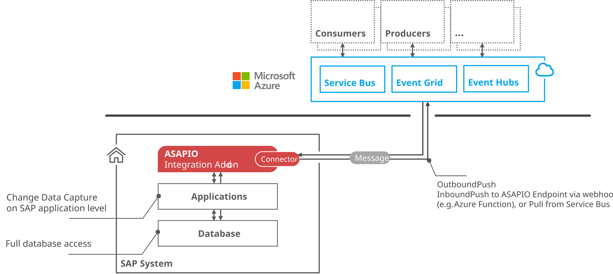
- Azure Service Bus – enterprise-grade message queue and pub/sub broker
- Azure Event Hub – big-data event streaming platform
- Azure Event Grid – fully managed event routing service
- Azure Data Lake Storage Gen2 (ADLS) – scalable data lake storage
Prerequisites
- Microsoft Azure account with the relevant services provisioned (Event Hub namespace, Service Bus namespace, Event Grid topic, or ADLS Gen2 storage account)
- Entra ID (Azure AD) app registration or Managed Identity configured (for OAuth authentication)
- Network connectivity from the SAP system to the Azure endpoints (HTTPS/443)
Authentication Options
ASAPIO supports three authentication methods for Azure:
| Method | Key Settings | Recommended For |
|---|---|---|
| OAuth (Entra ID) | AZURE_CLIENT_ID, TOKEN_DESTINATION | App registrations with client secret |
| Managed Identity | AZURE_SERVICE_TYPE, AZURE_AUTH_TYPE=MANAGED_IDENTITY | Azure-hosted SAP (e.g. S/4HANA on Azure VMs) |
| SAS Key | AZURE_KEY_NAME, AZURE_NAMESPACE | Simple access without Entra ID |
Store OAuth client secrets or SAS keys in the ABAP Secure Store: transaction /ASADEV/SCI_TPW.
RFC Destinations
Create two HTTP RFC destinations (SM59, type G):
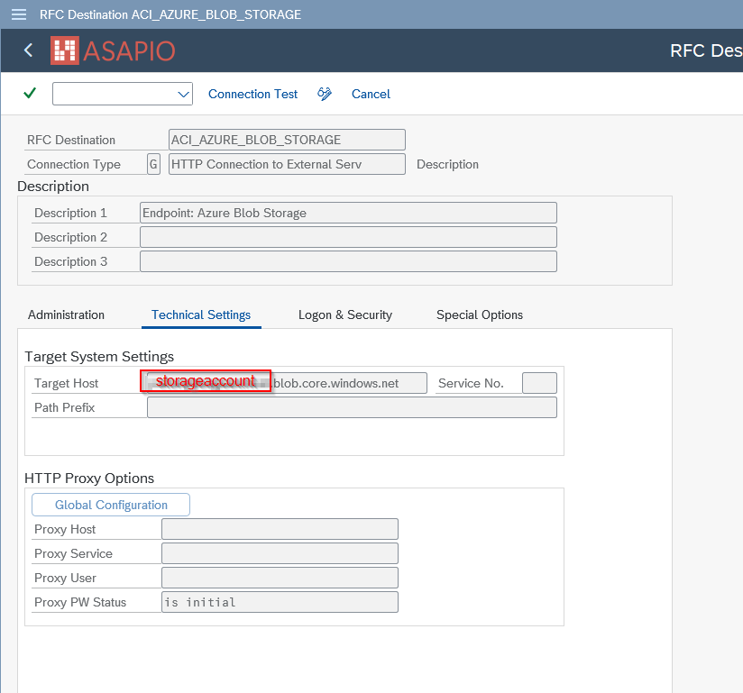
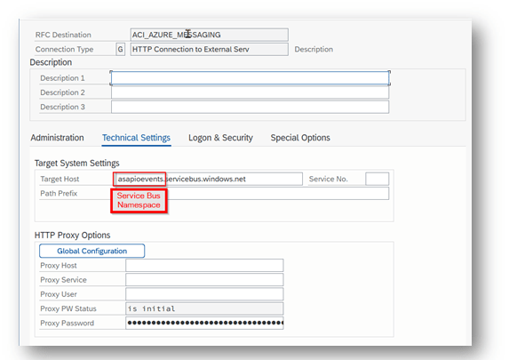
- Messaging endpoint: The Azure service endpoint (e.g.
your-namespace.servicebus.windows.net) - OAuth endpoint:
login.microsoftonline.com– for OAuth token retrieval (not needed for SAS/Managed Identity)
Import the relevant Azure root certificates (Baltimore CyberTrust, DigiCert) into STRUST (SSL Client Standard).
BC-Set Activation
Activate the Azure framework BC-Set via transaction SCPR20:
- BC-Set:
/ASADEV/ACI_BCSET_FRAMEWORK_AZ
Cloud Instance Configuration
Create the connection instance in SPRO → ASAPIO Cloud Integrator – Connection and Replication Object Customizing (transaction /ASADEV/ACI_SETTINGS). Specify the RFC destination for the messaging endpoint, the ISO code page, and set Cloud Type to AZURE. Also add handler class /ASADEV/CL_ACI_AZURE_REST to the cloud adapter list.
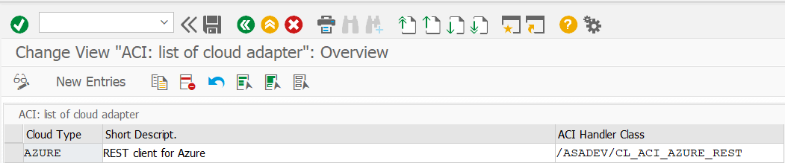
| Field | Value |
|---|---|
| Cloud Adapter | /ASADEV/CL_ACI_AZURE_REST |
| RFC Destination | Azure messaging RFC destination |
| Success Response Codes | 201, 202 |
OAuth Default Values
| Key | Value |
|---|---|
AZURE_CLIENT_ID | Entra ID application (client) ID |
TOKEN_DESTINATION | RFC destination for OAuth endpoint |
AZURE_AUTH_TYPE | oauth |
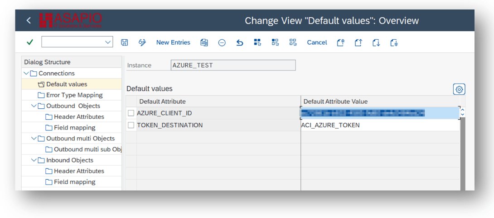
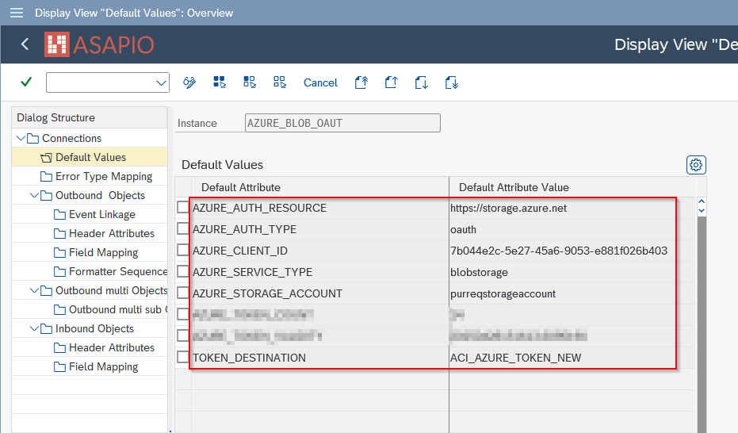
Managed Identity Default Values
Note: Managed Identity authentication only works when the SAP system is also running in the Azure cloud.
| Key | Value |
|---|---|
AZURE_SERVICE_TYPE | Target service (e.g. servicebus) |
AZURE_AUTH_TYPE | MANAGED_IDENTITY |
TOKEN_DESTINATION | RFC destination for Managed Identity endpoint (must use HTTP, not HTTPS) |
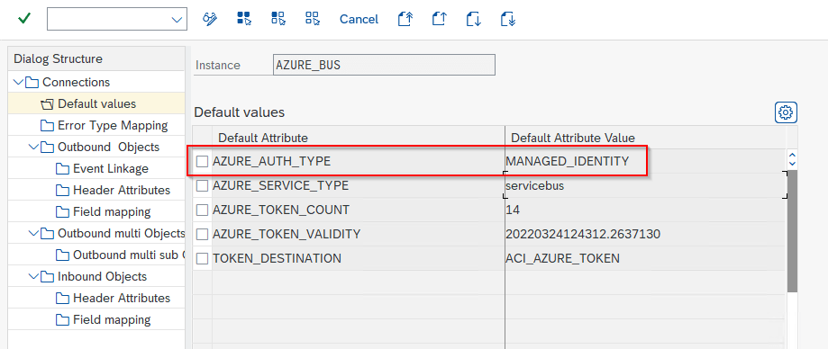
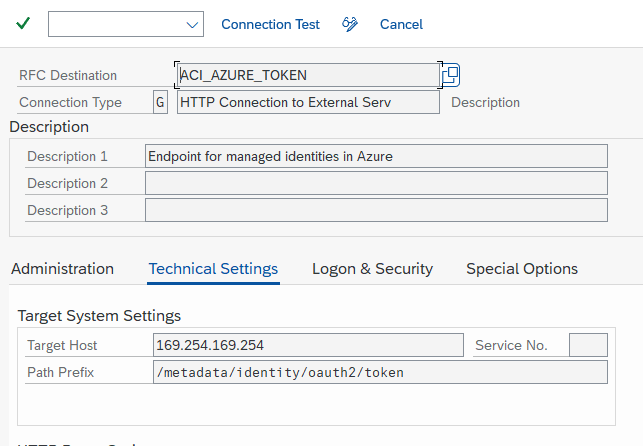
SAS Key Default Values
| Key | Value |
|---|---|
AZURE_KEY_NAME | Name of the SAS policy (not required for Data Lake Storage) |
AZURE_NAMESPACE | Namespace for Azure Service Bus / Event Hub (not required for Data Lake Storage) |
Service-Specific Endpoint Configuration
Azure Service Bus
Set AZURE_SERVICE_TYPE=servicebus and AZURE_AUTH_TYPE (oauth or sas) as connection default values. Specify the target queue or topic in the outbound object header attribute AZURE_TOPIC.
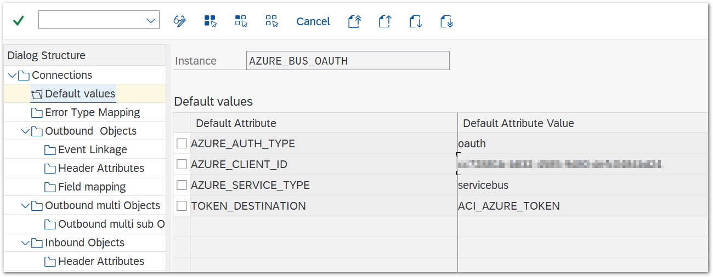
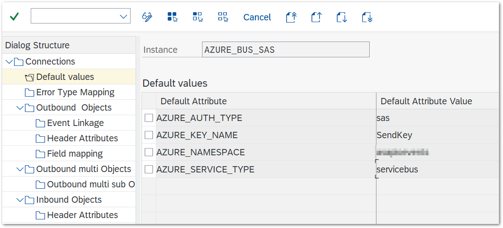
Azure Event Hub
Set AZURE_SERVICE_TYPE=eventhub and AZURE_TOPIC to the Event Hub name. For SAS-based authentication, also set AZURE_NAMESPACE (Event Hub namespace) and AZURE_KEY_NAME.
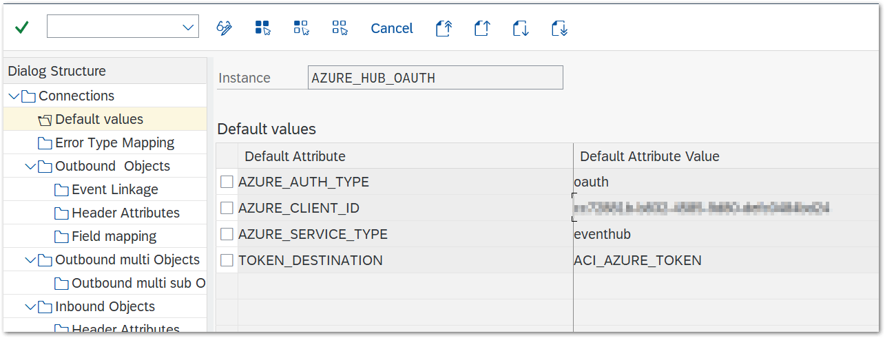
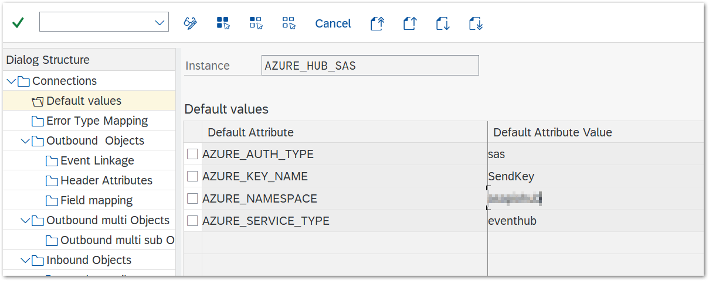
Azure Event Grid
Event Grid supports SAS-based authentication. Configure the following default values: AZURE_SERVICE_TYPE=eventgrid, AZURE_AUTH_TYPE=sas, AZURE_GRID_REGION (technical region name), and AZURE_GRID_TOPIC (topic name).
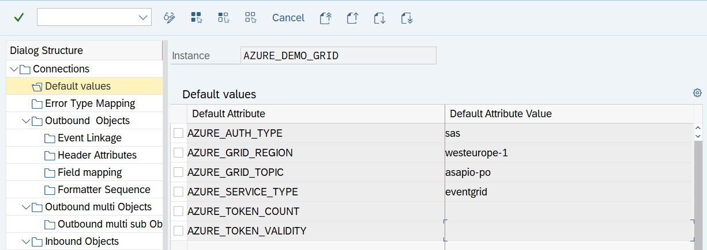
Azure Data Lake Storage (ADLSgen2)
Set AZURE_SERVICE_TYPE=datalake and AZURE_STORAGE_ACCOUNT as connection default values. For OAuth, also configure AZURE_CLIENT_ID and TOKEN_DESTINATION. Specify the target container via AZURE_CONTAINER. Available from release 9.32507.
Custom HTTP Endpoint
Only OAuth Authentication with Entra ID is supported for custom HTTP endpoints. Set AZURE_AUTH_RESOURCE (the resource URI) as a connection default value, and ACI_HTTP_URI (the path to send messages to) as an outbound object header attribute.
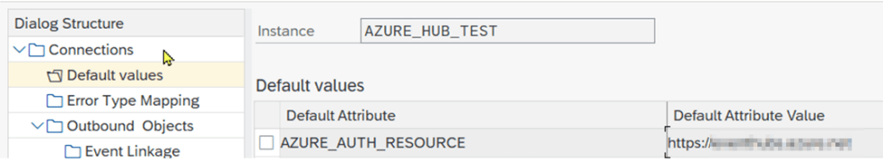
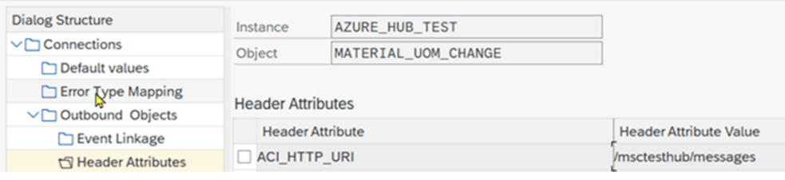
Outbound Messaging
For outbound messaging, you can use and combine the following methods. All methods require a message type (WE81, BD50) and event linkage (SWE2 or Event Studio), and use AZURE_TOPIC as the target header attribute.
- Simple Notifications – extractor
/ASADEV/ACI_SIMPLE_NOTIFY; sends a trigger notification without payload extraction - Message Builder (Generic View Extractor) – extractor
/ASADEV/ACI_GEN_VIEW_EXTRACTOR; extracts and formats data from a configured database view - Packed Load – extractor
/ASADEV/ACI_GEN_VIEW_EXT_PACKwith Load Type set to Packed Load; splits large datasets into manageable packs - IDoc Capturing or Custom-built triggers and extractors
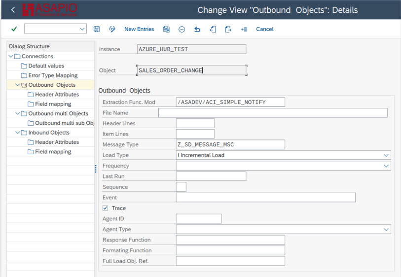
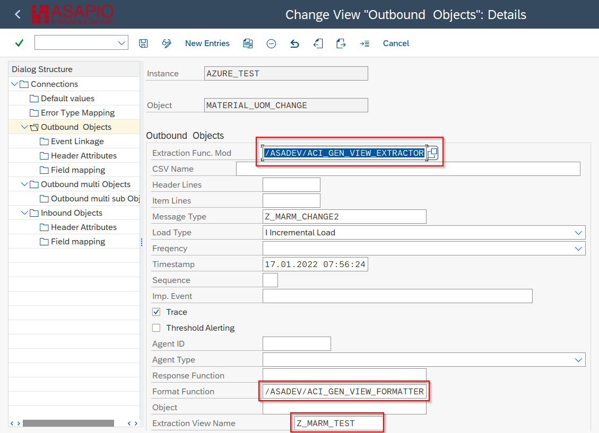
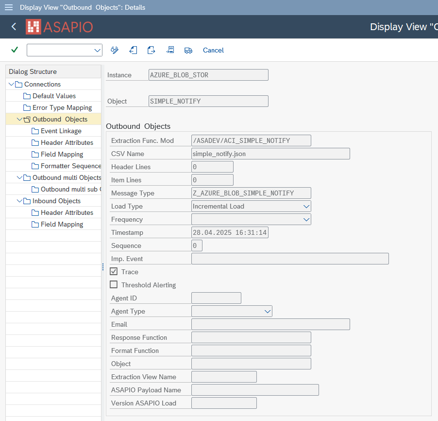
Key Header Attributes
| Attribute | Description |
|---|---|
AZURE_TOPIC | Target queue, topic, or Event Hub name (mandatory) |
ACI_ADD_LOGSYS | X – adds the SAP logical system to the top level of the payload (generic view extractors/formatters only) |
AZURE_IMMEDIATE_RETRY | Number of immediate retry attempts on failure (default: 2) |
AZURE_CONTAINER | Container name (Data Lake Storage or payload offloading) |
Payload Offloading (Service Bus)
For large messages exceeding Service Bus limits, ASAPIO can offload the payload to Azure Blob Storage and send a reference URL in the Service Bus message. Enable with:
| Attribute | Value |
|---|---|
AZURE_PAYLOAD_OFFLOADING | X |
AZURE_CONTAINER | Blob container name |
Multiple authentication combinations are supported for the blob storage vs. the Service Bus endpoint (separate OAuth or SAS configurations).
Inbound: Azure Service Bus Pull
ASAPIO can pull messages from an Azure Service Bus queue using Peek-Lock mode. Messages are read and processed, then deleted from the queue. This is repeated until the queue is empty. Configure the inbound object in transaction /ASADEV/ACI_SETTINGS:
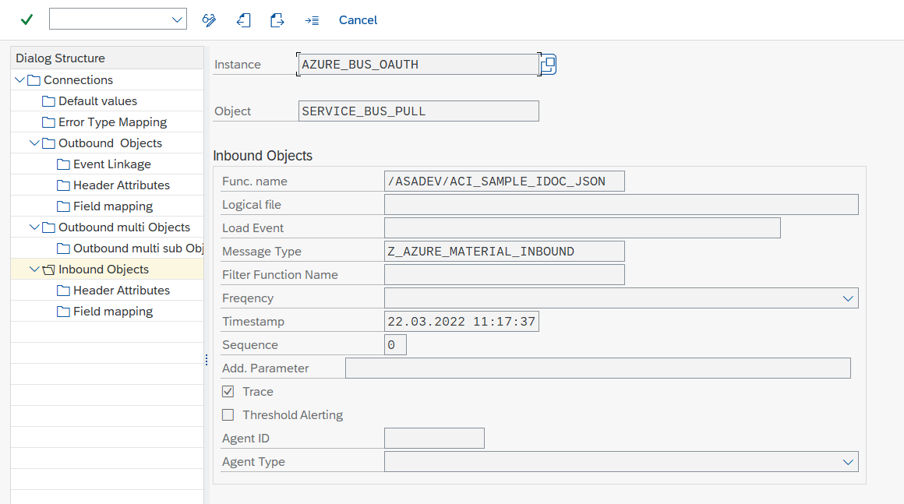
Then configure the queue name and polling settings in the inbound object header attributes:
| Attribute | Description |
|---|---|
AZURE_QUEUE_NAME | Queue to pull messages from (mandatory) |
AZURE_PULL_DURATION | Duration of polling in seconds (default: 60) |
AZURE_PULL_WAIT | Wait between polls when queue is empty, in seconds (default: 3) |
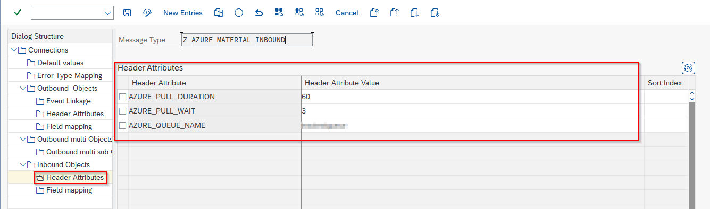